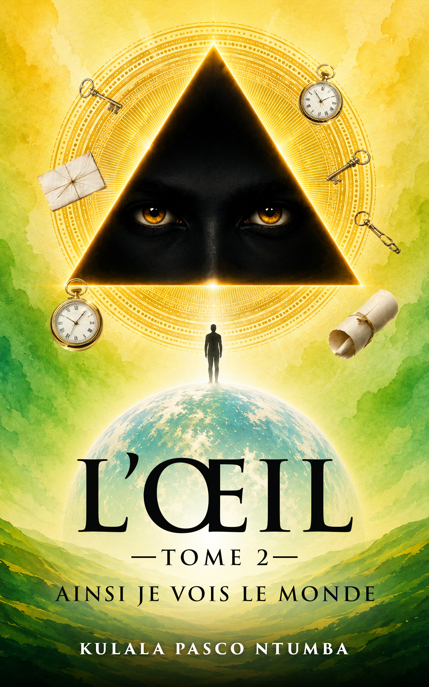

L'ŒIL — Tome 2
Ainsi je vois le monde
Kulala Pasco Ntumba poursuit son exploration de la conscience, de la perception et de la compréhension du monde — une immersion encore plus profonde dans sa vision de l'existence et les grandes questions qui traversent l'expérience humaine.

L'œil, le triangle, la lumière — symboles de la connaissance et de l'éveil.
À propos de l'œuvre
Une expérience intellectuelle et introspective
C'est avec un immense plaisir que Hakvision Éditions annonce la parution de L'ŒIL – Tome 2 : Ainsi je vois le monde, la nouvelle œuvre de Kulala Pasco Ntumba. Après avoir suscité de nombreuses réflexions auprès de ses lecteurs, l'auteur poursuit son exploration de la conscience, de la perception et de la compréhension du monde.
À travers ce deuxième tome, il propose une immersion encore plus profonde dans sa vision des choses, son regard sur l'existence et les grandes questions qui traversent l'expérience humaine. La couverture elle-même est riche en symboles : l'œil, le triangle, la lumière et l'horizon évoquent la connaissance, la quête de sens, l'éveil de la conscience et la manière dont chacun construit sa propre lecture du monde.
L'ŒIL – Tome 2 n'est pas seulement un livre à lire, c'est une expérience intellectuelle et introspective qui pousse à observer, questionner et comprendre autrement.
Nous félicitons chaleureusement Kulala Pasco Ntumba pour cette nouvelle publication et souhaitons à cette œuvre un accueil à la hauteur de son ambition.
Une œuvre. Une vision. Une invitation à voir le monde autrement.
Découvrir d'autres œuvres